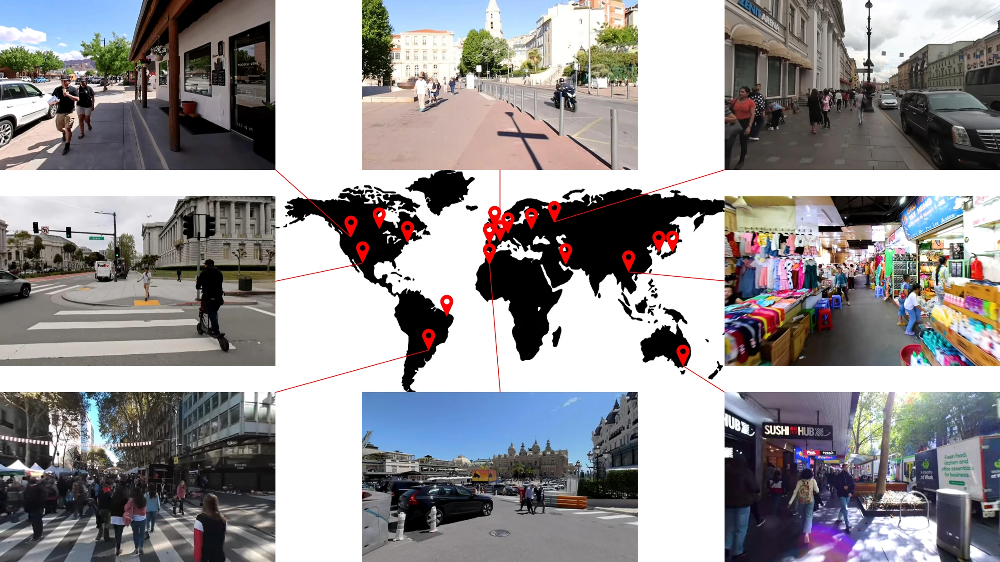
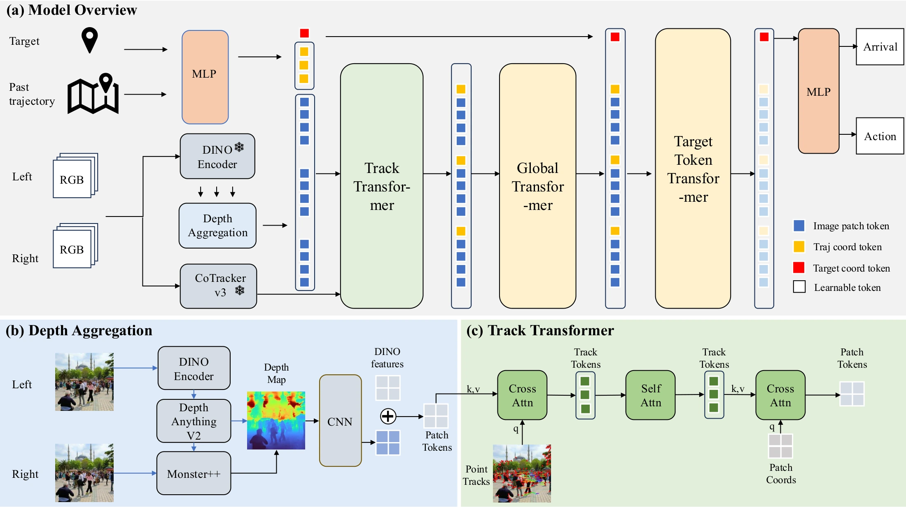
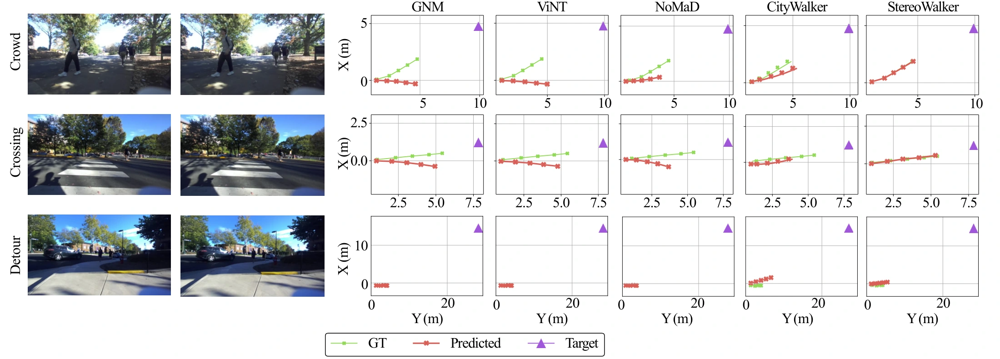
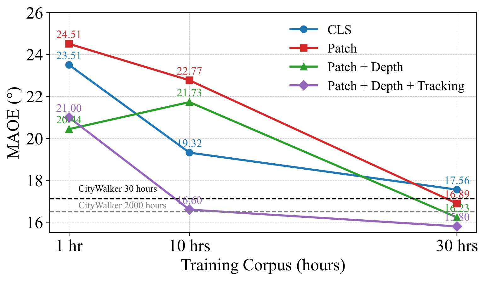
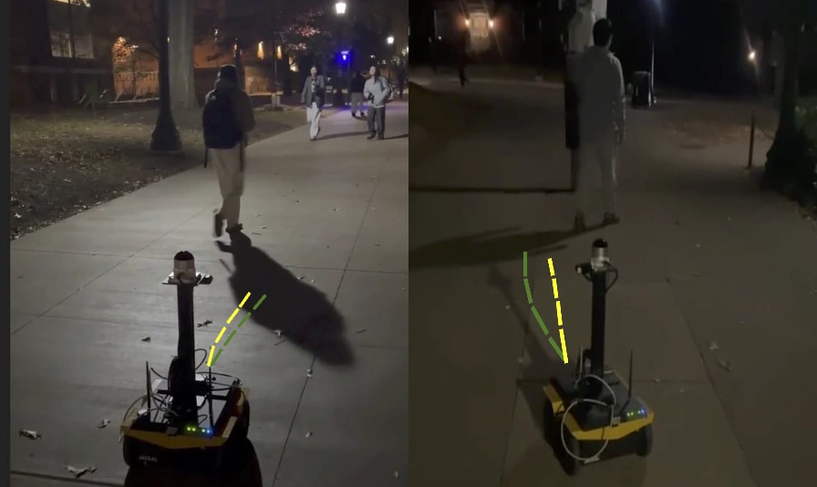

Learning to see geometry and motion.
Stereo vision and explicit 4D representations bring structure to urban navigation.

† Data-efficiency study: 30 hours of monocular training video versus CityWalker’s 2,000 hours.
Abstract
Despite rapid progress, embodied navigation in dynamic and unstructured urban environments remains brittle. Most existing approaches directly map monocular visual inputs to actions through end-to-end pixel-to-action training, assuming that accurate spatiotemporal (4D) scene understanding will emerge implicitly. While appealing, this paradigm requires large amounts of pixel-to-action supervision that are difficult to obtain. This challenge is amplified in dynamic, unstructured settings, where robust navigation requires precise 4D scene modeling.
To address these limitations, we present Stereo4DWalker, a 4D-aware embodied navigation model that leverages stereo inputs and explicitly builds structured 4D representations of geometry and motion. These 4D structures are integrated into navigation transformers through simple yet effective 4D-conditioned attention layers. To support scalable training, we curate a large-scale stereo navigation dataset with automatically annotated actions from Internet stereo videos. Our experiments show that Stereo4DWalker surpasses state-of-the-art performance using only 1.5% of the training data, highlighting the effectiveness of explicit 4D visual modeling for data-efficient and robust urban navigation.
Stereo Urban Navigation Dataset
Diverse cities. Real pedestrians. Automatically labeled trajectories.
We curate StereoUrban: 600 high-resolution, first-person stereo walking clips totaling 60 hours across cities including San Francisco, Madrid, and Tokyo. The collection spans different architecture, lighting, weather, and pedestrian density.
Data curation. Qwen2-VL filters footage for continuous, goal-directed walking. MAC-VO then recovers camera trajectories from rectified stereo videos to generate navigation supervision automatically.
Explore the public release
Available on Hugging Face as StereoWalker.
StereoUrban training data
544 video IDs and camera-pose annotations. Source videos are retrieved from their original YouTube uploads.
UVA robot test set
10 stereo sequences · 3,305 samples with images, poses, and scene-category labels for 9 of the 10 sequences.
StereoUrban in motion
UVA robot test set
Method
Explicit 4D scene understanding, integrated into a navigation transformer.

See the geometry
Depth complements DINOv2 image features with explicit 3D scene structure.
Follow the motion
CoTracker3 point tracks connect scene content across time, informing 4D-conditioned attention.
Navigate to the goal
Global and goal-conditioned attention combine the visual context and recent motion to predict actions.
Results
Offline stereo navigation
More accurate waypoints and higher arrival accuracy on the stereo benchmark.
| Method | L2 (m) ↓ | MAOE (°) ↓ | Arrival (%) ↑ |
|---|---|---|---|
| GNM | 1.13 | 4.7 | 69.4 |
| ViNT | 1.47 | 3.8 | 70.6 |
| NoMaD | 2.31 | 6.3 | 71.7 |
| CityWalker | 0.76 | 3.7 | 91.2 |
| Stereo4DWalker (monocular) | 0.63 | 3.3 | 93.7 |
| Stereo4DWalker (stereo) | 0.62 | 2.9 | 94.6 |
Qualitative comparison

Data-efficient learning

Explicit geometry and motion provide useful structure for learning navigation. In the training-efficiency study, our model surpasses CityWalker with 30 hours of monocular video, compared with 2,000 hours used by CityWalker.
This comparison uses a separate monocular training subset; the stereo data collection totals 60 hours.
Real-World Robot Navigation
From Internet video to a Clearpath Jackal with a ZED 2i stereo camera.

73.8%success after fine-tuning
Across 42 trials per method covering forward motion, left turns, and right turns.
Success requires reaching within 1 m of the target and remaining there. Collisions count as failures.
Citation
@inproceedings{zhou2026stereo4dwalker,
title = {{Stereo4DWalker}: Learning {4D}-aware Embodied Urban
Navigation from Internet Stereo Videos},
author = {Zhou, Wentao and Chen, Xuweiyi and Rajagopal, Vignesh
and Chen, Jeffrey and Chandra, Rohan and Cheng, Zezhou},
booktitle = {IEEE/RSJ International Conference on Intelligent
Robots and Systems (IROS)},
year = {2026}
}The paper is also available as arXiv:2512.10956.
Acknowledgements
The authors acknowledge the Adobe Research Gift, the University of Virginia Research Computing and Data Analytics Center, Advanced Micro Devices AI and HPC Cluster Program, Advanced Cyberinfrastructure Coordination Ecosystem: Services & Support (ACCESS) program, and National Artificial Intelligence Research Resource (NAIRR) Pilot for computational resources, including the Anvil supercomputer (National Science Foundation award OAC 2005632) at Purdue University and the Delta and DeltaAI advanced computing resources (National Science Foundation award OAC 2005572). PI Chandra is supported in part by a CCI award supported by the Commonwealth of Virginia.